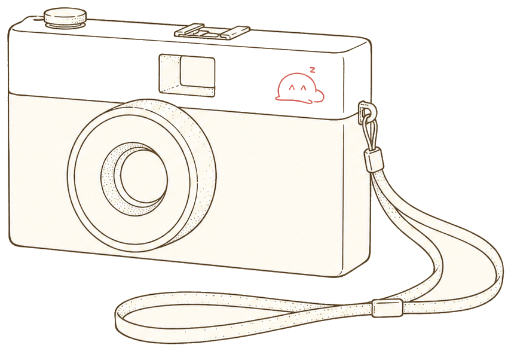

roll 01–09 · 35mm · 2015–2025
在拍。
晾在绳上的，是拍下的日常 ✦

显示 {{ visibleN }} / {{ filteredN }} 张 · 共 107 张
{{ p.loc }}
{{ p.dateLabel }}
{{ p.loc }}
{{ p.dateLabel }}
{{ p.loc }}
{{ p.dateLabel }} · {{ p.catLabel }}

fig.02 — contact line · roll continues